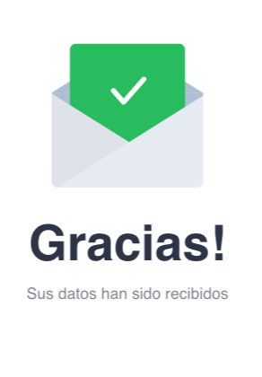

<ion-header [translucent]="true">

</ion-header>

<ion-content [fullscreen]="true">
  <ion-header collapse="condense">
    <ion-toolbar>
      <ion-title size="large">enviado</ion-title>
    </ion-toolbar>
  </ion-header>

  <div class="container">
    
    <p class="center-text">Tus datos serán analizados y se evaluará la solicitud, si esta es aceptada pronto recibirás
      tu beca.</p>
    <button [routerLink]="['/principal']" class="back-button">Volver</button>

  </div>


</ion-content>